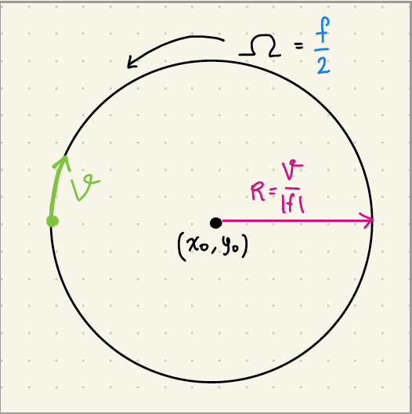
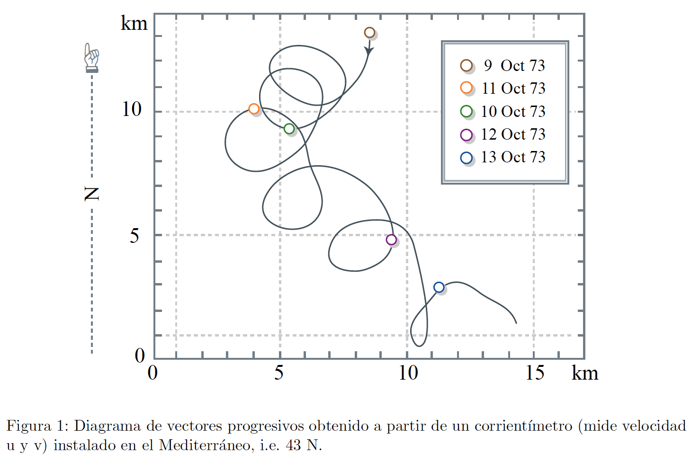
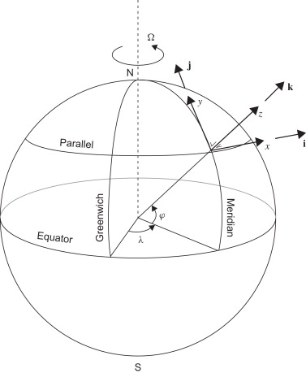
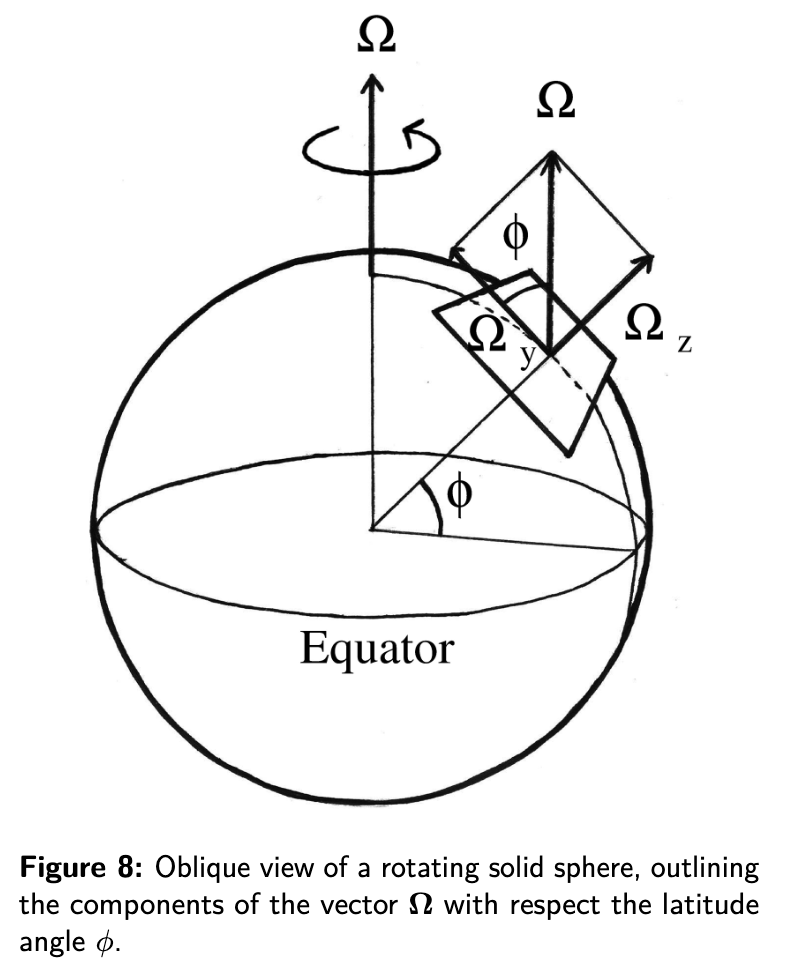

class: center, middle <br/><br/> .title[6 Aceleración de Coriolis II] .subtitle[Módulo 3: Dinámica de la Atmósfera] <br/><br/> .author[Diplomado en Meteorología y Climatología] .institution[ICAyCC] <br/> .date[13 de marzo de 2024] <br/><br/> <img style="width:100%" src="./figures/green_waves.png"> <!-- .note[Created with [{Liminal}](https://github.com/jonathanlilly/liminal) using [{Remark.js}](http://remarkjs.com/) + [{Markdown}](https://github.com/adam-p/markdown-here/wiki/Markdown-Cheatsheet) + [{KaTeX}](https://katex.org)] --> --- name: toc class: left <img style="width:40%" src="./figures/ink.jpg"> #Contenido 1. [Movimiento de una partícula en un plano en rotación](#plano) 1. [Aceleración en un planeta 3D](#3D) <!-- Comment out the next slide if you don't want the Table of Contents link --> --- layout: true .toc[[✧](#toc)] --- name: repaso class: left # La clase pasada aprendimos: * La diferencia entre sistemas de referencia inerciales y no inerciales; * a escribir vectores absolutos en el sistema de referencia en rotación (posición, velocidad y aceleración); * que la aceleración absoluta en el sistema en rotación tiene 3 términos: ac. relativa, ac. de Coriolis y ac. centrífuga; * que la ac. centrífuga es proporcional a $\Omega^2$ y a la distancia al eje de rotación; * que la ac. de Coriolis es porporcional a la velocidad (relativa) y a $\Omega$. --- class: left **1. Cuál es la magnitud de la aceleración centrífuga y de Coriolis que experimentas mientras tomas un baño de sol en la azotea de una casa en el Ecuador (Lat $\theta=0$, asumiendo una Tierra esférica de radio $R_T$ con taza de rotación $\Omega$)?** a) centrífuga = $\Omega^2 R_T$, Coriolis > $0$. b) centrífuga = $\Omega^2 R_T$, Coriolis = $0$. c) centrífuga = $\Omega^2 R_T \cos{\theta}$, Coriolis > $0$. d) centrífuga = $\Omega^2 R_T \sin{\theta}$, Coriolis = $0$. -- **Respuesta: b** --- name: plano class: left ## Partícula libre en un plano en rotación Sin fuerzas externas salvo su peso (Por simplicidad llamaré gravedad a la gravedad aparente). </br> Caso de un plano (2D) rotando a velocidad angular $\Omega$. </br> Las ecuaciones que describen el movimiento de esta partícula son: $$\frac{du}{dt}-2\Omega v=0,$$ $$\frac{dv}{dt}+2\Omega u=0.$$ Cuya solución general es: $$u(t)=V_0 \sin{ft+\varphi},$$ $$v(t)=V_0 \cos{ft+\varphi},$$ donde $f=2\Omega$ se concoce como parámetro de Coriolis, y $V_0$ y $\varphi$ son constantes de integración. --- Si volvemos a integrar, obtenemos las posiciones de la partícula como función del tiempo: $$x(t)=x_0 - \frac{V_0}{f}\cos{ft+\varphi},$$ $$v(t)=y_0V + \cos{ft+\varphi}.$$ Que podemos reescribir como $$(x-x_0)^2 + (y-y_0)^2=(\frac{V_0}{f})^2$$ .left-column[ que es la ecuación de un círculo de radio $V_0/|f|$ centrado en el punto ($x_0$, $y_0$). Si f>0 la partícula gira en sentido horario, y en sentido antihorario si f<0.] .right_column[ .center[  ]] --- class: left ## Recordemos el video de la presentación pasada y discutamos: <iframe width="560" height="315" src="https://www.youtube.com/embed/9QL88dVb-78?si=FWfHzR1M9hwyou8p" title="YouTube video player" frameborder="0" allow="accelerometer; autoplay; clipboard-write; encrypted-media; gyroscope; picture-in-picture; web-share" allowfullscreen></iframe> [UCLA spinlab](https://youtu.be/9QL88dVb-78) --- El tiempo que le toma a la particula completar la vuelta completa se conoce como **periodo inercial**, $T_p$ y está dado por $$T_p=2\pi/f.$$ Este movimiento circular de una partícula (o parcela de fluido) con velocidad inicial $V_0$ se conoce como **oscilación inercial** y su radio ($V_0/|f|$) depende de la velocidad inicial, mientras que su periodo ($T_p$) solo depende de la rotación ambiente. .center[  ] --- name:3D ##Parámetro de Coriolis en 3D ¿Cómo se modifica el valor de $f$ por estar en una esfera y no en un plano? .center[  ] .caption[Figura 2.9 de Cushman-Roisin y Beckers, 2011.] --- El vector de rotación $\vec{\Omega}$ apunta hacia el eje de rotación en cualquier punto de la tierra. .left-column[Sus componentes son: $$\Omega_y=|\vec{\Omega}|\cos{\phi}$$ y $$\Omega_z=|\vec{\Omega}|\sin{\phi},$$ donde $\phi$ es la latitud en radianes.] .right-column[ .center[  ] .caption[[Imagen de Herrera y Morett (2016)](http://dx.doi.org/10.1590/1806-9126-RBEF-2016-0027)]] --- La componente que es relevante para el plano de rotación en el que ocurren los movimientos atmosféricos dominantes es la que apunta hacia "afuera" de la superficie de la tierra (plano local), **$\Omega_z$**. .left-column[$\Omega_z=0$ en el Ecuador, $\Omega_z>0$ en el hemisferio norte y $\Omega_z<0$ en el hemisferio sur. Definimos al **parámetro de Coriolis** como $f=2\Omega_z=2\Omega\sin{\phi}$.] .right-column[.center[ ] .caption[[Imagen de Herrera y Morett (2016)](http://dx.doi.org/10.1590/1806-9126-RBEF-2016-0027)]] --- Así que, aunque la Tierra rota como un cuerpo rígido, el efecto de esa rotación depende de dónde nos encontremos. Para efectos prácticos el plano local rota en sentido antihorario en el hemisferio norte y horario en el hemisferio sur. .left-column[$f=0$ en el Ecuador, $f>0$ en el hemisferio norte y $f<0$ en el hemisferio sur.] .right-column[.center[ ] .caption[[Imagen de Herrera y Morett (2016)](http://dx.doi.org/10.1590/1806-9126-RBEF-2016-0027)]] --- class: left ## En resumen * Una partícula libre en un plano en rotación seguirá un movimiento circular en el sistema en rotación (**oscilación inercial**). * El sentido del movimiento es opuesto al de rotación (horario para $f>0$ y antihorario para $f<0$). * El radio de la circunferencia está dado por $V_0/|f|$, donde $V_0$ es la velocidad inicial y $|f|$ es la magnitud del **parámetro de Coriolis** (f=$2\Omega$). * El periodo que la partícula tarda en competar una vuelta se conoce como **periodo inercial** y está dado por $T_p=2\pi/f= \pi/\Omega$. * En el caso 3D, el movimiento horizontal también es circular (oscilaciones inerciales) pero cambia la definición del parámetro de Coriolis, que ahora depende de la latitud $\phi$: $f=2\Omega \sin{\phi}$ --- class: left ## Les dejo los siguientes videos para repasar los conceptos de clases que llevamos hasta ahora: </br></br> [Planenteando](https://youtu.be/7l1xiJICGus): Efecto Coriolis, ahora pueden ponerle matemáticas al video con lo que han aprendido. </br></br> [UCLA spinlab](https://youtu.be/9QL88dVb-78): El mismo que vimos en clase. --- class: left # Referencias Cushman-Roisin y Beckers, Introduction to Geophysical Fluid Dynamics, Capítulo 2.